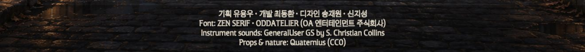
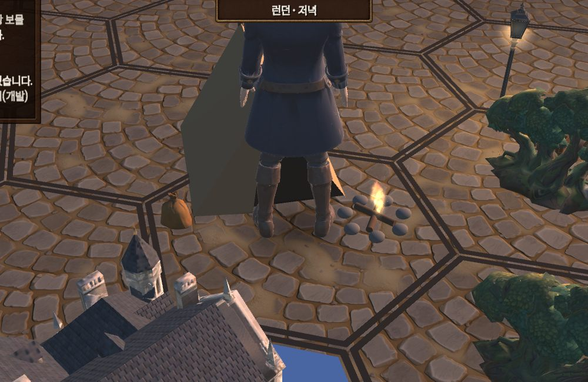
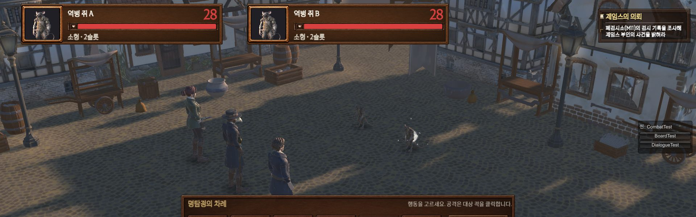
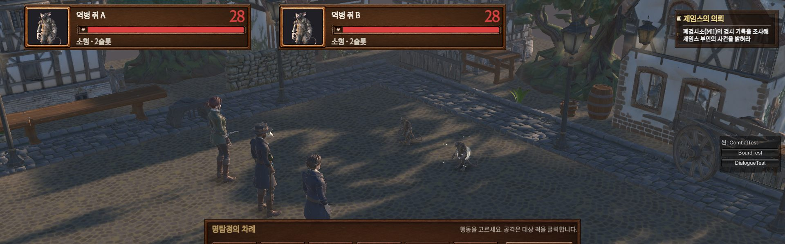
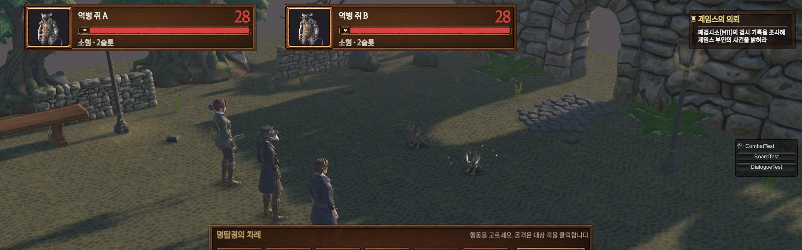
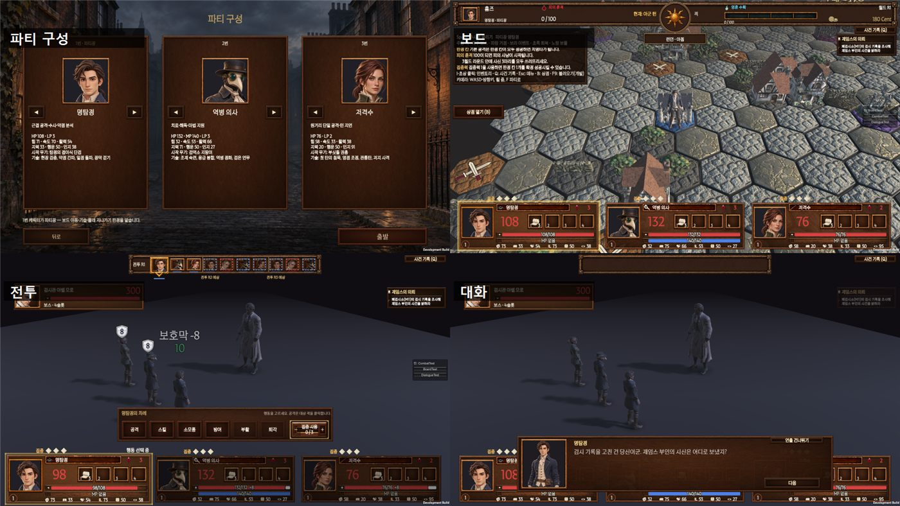
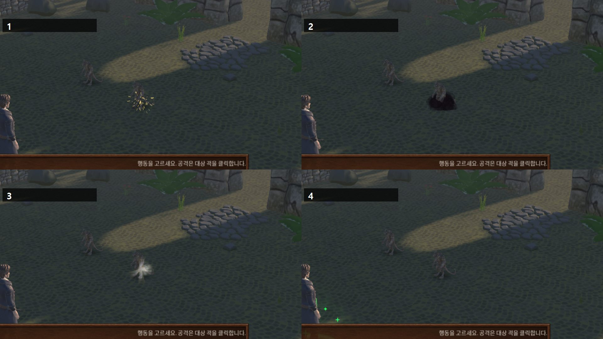
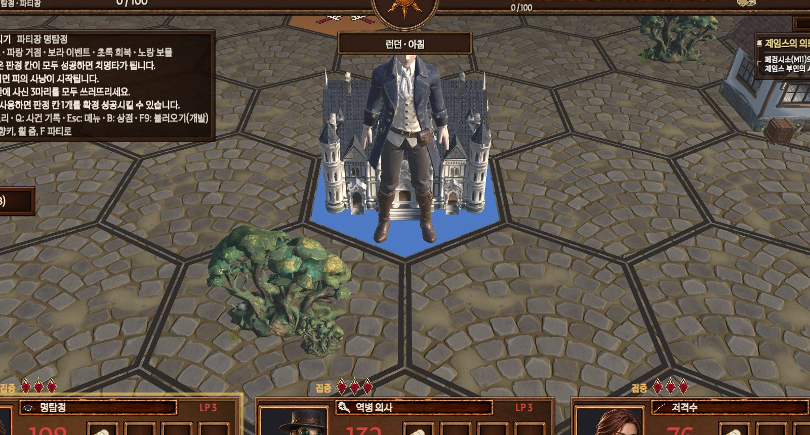
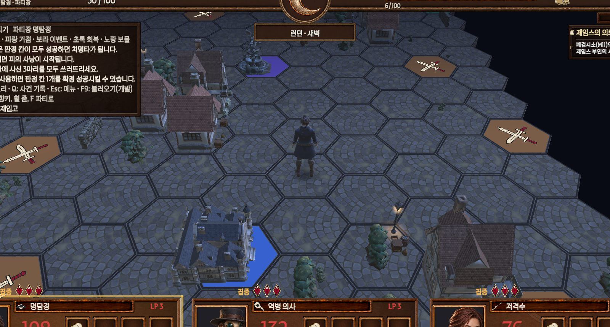

2026-11-14 · 개발 최동환 → 기획 유용우 · 11/15(토) 검수 때 같이 봐 주세요
한 줄 요약: 회신 고마워요. 회신 내용은 거의 다 게임에 넣었어요.
· 기획이 할 것 3개: P1 1막 문구 최종 확인 · P2 전투 배경(맵 3종 + 폐검시소) 확인 · P3 명탐정 초상 결정.
· 공유: 11/12~11/13 팀장이 정한 것들(3·4절). 읽고 이상한 것만 말해 주세요.
· Q3(탐정 수첩) · A2(무기 숨기지 않음) · R11(회전 58°)은 이미 따로 알렸어요.
답하는 법: 번호와 OK/수정만. 예) "P1 OK", "P2 외곽 공원 나무 줄여 주세요".
1. 회신 반영 결과
번호
회신 내용
게임에 들어간 것
Q1
크레딧 순서 기획 → 개발 → 디자인, 글꼴 출처
메인 메뉴 아래에 넣음 (아래 사진)
Q4
야영 성공 → 칸에 텐트, 다음 이동에 치움
넣음 · 점검 통과
Q5
아이콘은 시작 무기 3종 먼저
디자인 요청서에 8개 순서로 보냄
R8
퇴각·탈출권 걷기 0.8초
넣음

메인 메뉴 아래 크레딧. 이름·표기가 맞는지 같이 봐 주세요.

야영 텐트 — 야영한 칸에 텐트·모닥불·자루 (다음 이동이 시작되면 사라짐)
2. 기획이 할 것 (11/15 검수)
P11막 문구 최종 확인 꼭 필요
회신대로 지금 초안으로 11/15에 마감해요. 개발이 오탈자는 훑어봤고 못 찾았어요.
확인할 곳: 시작 이야기 · 제임스 의뢰 대화 · 아벨 모로 보스 대화 · 승리 후 대화 · S05 제임스 보고 · 1막 끝 문구 · 패배 문구.
고칠 문구가 있으면 "어디 → 바꿀 글"만 적어 주세요. 개발이 바로 넣어요.
답: ☐ OK ☐ 수정 (목록 따로)
P2전투 배경 확인 — 일반 맵 3종 + 폐검시소 꼭 필요
팀장 의견(11/13): "일반 전투가 모두 같은 배경이라 지루함" → 싸운 자리 구역에 따라 3종으로 나눴어요.
거점 가까이 = 시장 광장 · 중간 = 주택가 거리 · 바깥 = 외곽 공원. 보스전(폐검시소)은 그대로.
받은 에셋과 무료 에셋(Quaternius CC0)만 썼어요.

① 시장 광장 — 노점·수레·통·상자

② 주택가 거리 — 집·돌길·벤치·가로등

③ 외곽 공원 — 돌담·아치·풀·나무
답: ☐ OK ☐ 수정 (어느 맵 · 무엇)
P3명탐정 초상 결정 있으면 좋음
회신대로 실제 화면에서 보고 정해 주세요. 지금 들어간 그림을 쓰고 있어요.
아군 3명을 아벨 초상의 질감·명암에 맞추는 건 디자인에 요청했어요 (B1).

지금 초상화
답: ☐ 지금 그림 ☐ 바꿈
3. 바뀐 것 공유 — 큰 것 (11/12~11/13 팀장 결정)
읽고 이상한 것만 말해 주세요. 답이 없으면 이대로 가요.
S1스킬마다 다른 이펙트
팀장 의견: 캐릭터 스킬 컨셉에 맞게 스킬 이펙트가 모두 달라야 함.
명탐정: 금빛 정밀 (약점 간파 = 가슴 조준 + 금빛 불티).
역병 의사: 검보라 독기 연기 / 초록 치료 원 / 정화 빛.
저격수: 흰 섬광 관통 (등 뒤로 튀는 조각) / 발밑 흙 튐.
위치도 스킬마다 맞춤: 독기는 발밑, 관통은 몸 앞과 뒤, 저지 사격은 발 앞.

1 약점 간파 · 2 검은 독기 · 3 관통탄 · 4 응급 봉합
S2전투 이펙트 원칙
평범한 동작은 작고 짧게, 크리티컬·부활만 조금 크게.
맞음 = 흰 섬광 / 크리티컬 = 주황 섬광 + 불티 / 빗나감 = 발밑 흙먼지 / 방어 = 몸 앞 푸른 고리 / 회복 = 초록 알갱이.
총은 쏘는 순간 총구 불꽃 1번. 떠오르는 숫자: 회복 초록 · 피해 주황 · 크리티컬 붉은 주황.
S3디버프 걸려 있는 동안 표시
몸 주변 알갱이는 몸과 어긋나 보여서 뺐어요.
방어 감소: 몸 테두리 파란 깜빡임 + 옆에 금 간 방패. 공격 감소: 주황 테두리 + 부러진 칼.
속박: 허리·가슴 높이 잿빛 원 2개. 아이콘은 임시 그림 → 디자인 요청함.
방어 감소공격 감소
S4보드 바닥 · 장식 · 가로등
바닥: 칸마다 따로 된 돌판 → 보드 전체 이어진 돌길 + 칸은 얇은 선.
장식: 빈 칸 30%에 작은 소품, 구역(시장 · 주택가 · 외곽)마다 소품 종류·밀도 다름. 규칙에는 영향 없음.
가로등: 저녁·새벽에 켜짐 (전투와 같은 규칙).

낮

저녁 — 가로등 켜짐
S5보드 시점 · 주사위
카메라 40° · 11m. 이동할 때 출발→도착 방향으로 한 번만 천천히 돎 (칸마다 흔들리지 않게).
칸 위 구조물은 칸 뒤쪽, 말은 입구 앞. 말을 가리는 구조물은 반투명.
주사위는 옆으로 던져 굴림 → 눈을 1.3초 보여 준 뒤 화면 오른쪽에 둠.
S6전투 창 · 집중
집중: 카드 위와 고르기 창 모두 보석 그림. 숫자 "0/3"은 빼고 보석 개수로만. 보석을 눌러 고름.
아군 대상(회복·부활 등)은 아래 캐릭터 카드를 눌러서도 고름.
다른 아군에게 회복·정화를 쓰면 그 아군 쪽으로 돌아서 씀.
4. 바뀐 것 공유 — 작은 것 (한 줄씩)
무엇
바뀐 것
폐검시소 배경
빈 바닥 → 돌바닥·돌벽 실내 + 받은 구조물 8종
보물 칸
이벤트 창 틀로 보상 창 (Cent · 물건 그림 · 확인)
아이템 그림·등급 색
그림 없으면 종류 아이콘. 노말 흰 · 희귀 파랑 · 에픽 보라 · 유니크 금 · 전설 빨강 · 스페셜 청록
초상화
카드·순서 띠·가방은 얼굴 부분, 대화 창은 3:4 전체
무기 소품
장착 무기 종류에 따라 손 소품 (단검·권총·장총·지팡이·마법서). 없는 종류는 빈손
대화 창
아무 곳이나 눌러도 다음 줄. 수락·거절은 버튼으로만
글자
작은 글자 최소 크기 · 회색 글 밝게. 정렬 규칙 (제목 가운데 · 설명 왼쪽 · 숫자 오른쪽)